En Python, PySide6 es una biblioteca que proporciona el enlace oficial de Python con Qt, que es un framework de desarrollo de aplicaciones de interfaz gráfica de usuario (GUI).
Para desarrollar este tipo de aplicaciones en Python, puedes emplear una amplia variedad de bibliotecas y frameworks, incluyendo Tkinter, wxPython, PyQt, entre otras. Sin embargo, PySide6 es una de las bibliotecas más populares y sólidas disponibles.
En este tutorial, aprenderás los conceptos básicos para construir aplicaciones GUI usando Python y PySide6.
En este tutorial, aprenderás cómo:
- Instalar PySide6 y configurarlo en tu computadora
- Crear aplicaciones con interfaces gráficas de usuario basadas en PySide6
- Organizar una GUI usando gestores de disposición
- Crear ventanas principales y diálogos en tus aplicaciones PySide6
Para obtener el máximo de este tutorial, debes conocer lo básico de programación con Python, especialmente temas relacionados con la programación orientada a objetos.
Conociendo PySide6
PySide6 es una biblioteca que proporciona el enlace oficial entre Python y Qt, el cual es un framework de desarrollo en C++ para crear interfaces gráficas de usuario (GUIs). Proporciona clases y herramientas para la creación de GUIs, manejo de XML, comunicación de red, expresiones regulares, hilos, bases de datos SQL, navegación web y otras tecnologías disponibles en Qt.
PySide6, también conocida como Qt for Python, es compatible con Windows, Linux, and macOS, por lo que puedes emplearla para desarrollar aplicaciones multiplataforma que tengan una apariencia nativa en cada plataforma.
Puedes usar PySide6 con una licencia comercial y en proyectos de código abierto con una licencia compatible con la licencia de Qt que estés empleando ya sea LGPLv3 o GPLv2.
Instalando PySide6
Para instalar PySide6 en tu computadora, la opción recomendada es instalar desde el índice de paquetes de Python, PyPI, usando el comando pip. Para esto, puedes crear un entorno virtual de Python y luego instalar el paquete pyside6, ejecuta lo siguiente en tu línea de comandos, dependiendo de tu sistema operativo.
En Windows
En Windows, puedes instalar PySide6 ejecutando los comandos:
PS> python -m venv venv
PS> venv\Scripts\activate.bat
(venv) PS> python -m pip install pyside6
Con estos comandos, primero creas y activas un entorno virtual Python y luego instalas PySide6 desde PyPI.
En Linux y macOS
En Linux y macOS el proceso es el mismo y puedes realizarlo con los siguientes comandos:
$ python -m venv venv
$ source venv/bin/activate
(venv) $ python -m pip install pyside6
Nuevamente, primero creas un entorno virtual usando el módulo venv de la biblioteca estándar de Python. Luego lo activas, y finalmente instalas PySide6.
Creando una aplicación PySide6
Con PySide6 instalado, estás listo para crear tu primera aplicación GUI. Para comenzar, crearás una aplicación de Hola, Mundo!. Aquí están los pasos a seguir:
- Importa
QApplicationy todos los widgets necesarios desdePySide6.QtWidgets. - Crea una instancia de
QApplication. - Define la GUI de la aplicación.
- Muestra la GUI de la aplicación.
- Ejecuta el bucle de eventos de la aplicación.
Crea un nuevo archivo Python llamado app.py en tu directorio de trabajo actual:
from PySide6.QtWidgets import QApplication, QLabel, QWidget
En esta línea de código, importas QApplication, QLabel, y QWidget desde QtWidgets. Con esto, has cumplido con el primer paso.
Para completar el segundo paso, necesitas crear una instancia de QApplication:
from PySide6.QtWidgets import QApplication, QLabel, QWidget
app = QApplication([])
En esta línea de código, creas la instancia de QApplication. Es necesario crear esta instancia antes de crear cualquier objeto GUI en PySide6.
El tercer paso consiste en crear la GUI o ventana principal de la aplicación. Para este ejemplo, la GUI se basará en la clase QWidget, que es la clase base de todos los objetos de interfaz de usuario en PySide6.
Así es como puedes crear la GUI de la app:
from PySide6.QtWidgets import QApplication, QLabel, QWidget
app = QApplication([])
window = QWidget()
window.setWindowTitle("PySide6 Demo")
window.setGeometry(100, 100, 280, 80)
hello = QLabel("<h1>Hola, Mundo!</h1>", parent=window)
hello.move(60, 15)
En este código, window es una instancia de QWidget, la cual proporciona todas las características que necesitarás para crear la ventana de la aplicación.
Como su nombre sugiere, el método .setWindowTitle() te permite establecer el título de la ventana en tu aplicación. En este ejemplo, la ventana de la app mostrará PySide6 Demo en su barra de título.
Puedes usar .setGeometry() para definir el tamaño de la ventana y la posición en la pantalla. Los dos primeros argumentos son las coordenadas de pantalla x y y donde se colocará la ventana. El tercer y cuarto argumentos son el ancho y alto de la ventana.
Cada aplicación GUI necesita widgets. Estos son los componentes gráficos que conforman la GUI de la app. En este ejemplo, usas un widget QLabel llamadohello que te permitirá mostrar el mensaje Hola, Mundo! en la ventana de tu aplicación.
Los objetos QLabel pueden mostrar texto formateado en HTML, por lo que puedes usar el elemento HTML "<h1>Hola, Mundo!</h1>" para proporcionar el texto deseado como un encabezado h1. Finalmente, usas el método .move() para colocar el mensaje en las coordenadas (60, 15) en la ventana de la aplicación.
Has finalizado el tercer paso, así que puedes continuar con los dos últimos pasos y preparar tu aplicación GUI PySide6 para ejecutarse:
from PySide6.QtWidgets import QApplication, QLabel, QWidget
app = QApplication([])
window = QWidget()
window.setWindowTitle("PySide6 Demo")
window.setGeometry(100, 100, 280, 80)
hello = QLabel("<h1>Hola, Mundo!</h1>", parent=window)
hello.move(60, 15)
window.show()
app.exec()
En las dos últimas líneas, llamas el método .show() en window para mostrar la ventana en la pantalla. Luego, inicias el bucle de eventos de la aplicación ejecutando .exec() y ya está.
Puedes ejecutar tu primera aplicación PySide6 con el siguiente comando:
$ python app.py
Al ejecutar este comando, verás una ventana que lucirá como la siguiente:
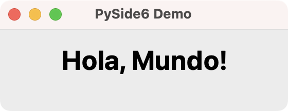
Tu aplicación muestra una ventana basada en QWidget. La ventana muestra el mensaje Hola, Mundo! usando un widget QLabel. ¡Y con eso, has escrito tu primera aplicación de escritorio GUI usando PySide6 y Python!
Explorando widgets comunes de PySide6
Los widgets son componentes gráficos rectangulares que colocas en las ventanas de tu aplicación para construir la GUI. Los widgets tienen atributos y métodos que te permiten ajustar su apariencia y comportamiento.
Los widgets también detectan clics del mouse, pulsaciones de teclas y otros eventos del usuario, el sistema de ventanas y otras fuentes. Cada vez que un widget captura un evento, emite una señal para anunciar su cambio de estado.
PySide6 tiene una colección variada de widgets, cada uno de los cuales tiene un propósito diferente. Algunos de los widgets más comunes incluyen botones, etiquetas o labels, campos de entrada de texto, listas desplegables, y botones radiales.
Botones
Puedes crear un botón con la clase QPushButton, la cual proporciona un botón de comando clásico. Algunos botones típicos son Ok, Cancelar, Aplicar, Sí, No, Cerrar, similares.
Crea un archivo llamado buttons.py y pon el siguiente código en él:
from PySide6.QtWidgets import (
QApplication,
QPushButton,
QVBoxLayout,
QWidget,
)
app = QApplication([])
window = QWidget()
window.setWindowTitle("Botones PySide6")
window.setGeometry(100, 100, 190, 50)
layout = QVBoxLayout()
window.setLayout(layout)
for text in ["Ok", "Cancelar", "Aplicar", "Sí", "No", "Cerrar"]:
button = QPushButton(text, parent=window)
layout.addWidget(button)
window.show()
app.exec()
En este ejemplo, primero añades la clase QPushButton a tus objetos importados. El bucle for itera sobre una lista de nombres de botones comunes y crea un botón con cada uno de los nombres definidos. Así es como se verá tu aplicación al ejecutarla desde tu terminal:
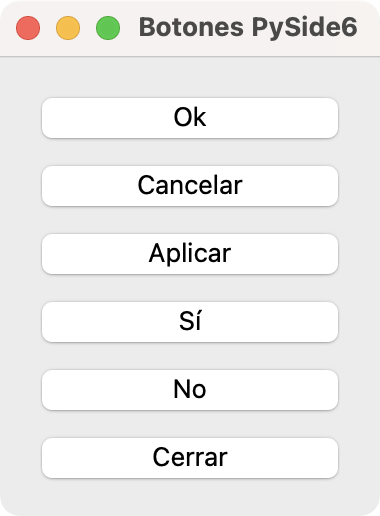
Botones como estos son quizás los widgets más utilizados en cualquier GUI. Cuando alguien hace clic en ellos, tu aplicación ordena a la computadora realizar acciones. Así es como puedes ejecutar cálculos cuando un usuario hace clic en un botón.
Campos de entrada de texto
Los campos de entrada de texto son widgets comunes también. Estos widgets te permite ingresar una sola línea de texto y puedes crearlos con la clase QLineEdit. Los campos de entrada de texto son útiles cuando necesitas obtener información del usuario como texto simple.
Para un ejemplo, crea un archivo line_edits.py y escribe el siguiente código en él:
from PySide6.QtWidgets import (
QApplication,
QLineEdit,
QVBoxLayout,
QWidget,
)
app = QApplication([])
window = QWidget()
window.setWindowTitle("Campos de texto PySide6")
window.setGeometry(100, 100, 250, 50)
layout = QVBoxLayout()
window.setLayout(layout)
for text in ["Nombre", "Usuario", "Contraseña"]:
edit = QLineEdit(parent=window)
edit.setPlaceholderText(text)
layout.addWidget(edit)
window.show()
app.exec()
En el bucle de este ejemplo, creas tres campos de texto para permitir que el usuario introduzca su nombre, usuario y contraseña:
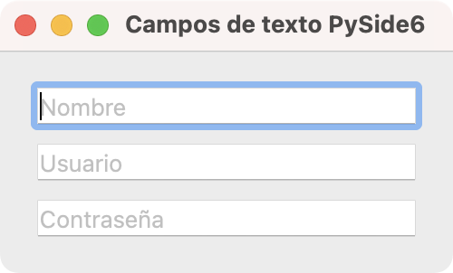
Campos de texto como estos proporcionan funcionalidades estándar como copiar, pegar, deshacer, rehacer, arrastrar, soltar, y similares. En la imagen, puedes notar que los campos muestran texto de marcador de posición para informar al usuario qué tipo de información debe introducir.
Listas desplegables
Las listas desplegables son otro tipo fundamental de widget en aplicaciones GUI. Puedes crearlas usando la clase QComboBox. Una lista desplegable presenta al usuario una serie de opciones de una manera que ocupa un espacio mínimo en la pantalla.
A continuación, un ejemplo de cómo emplear una lista desplegable en PySide6:
from PySide6.QtWidgets import (
QApplication,
QComboBox,
QVBoxLayout,
QWidget,
)
app = QApplication([])
window = QWidget()
window.setWindowTitle("Lista desplegable PySide6")
window.setGeometry(100, 100, 250, 50)
layout = QVBoxLayout()
window.setLayout(layout)
combo = QComboBox(parent=window)
combo.addItems(["PySide6", "PyQt", "Kivy", "Tkinter", "wxPython"])
layout.addWidget(combo)
window.show()
app.exec()
En este ejemplo, creas combo como una instancia de QComboBox. Esta instancia contendrá una lista desplegable con una serie de nombres de bibliotecas Python para desarrollo de aplicaciones GUI. Cuando ejecutas esta aplicación desde tu línea de comandos, obtienes una ventana como la siguiente:
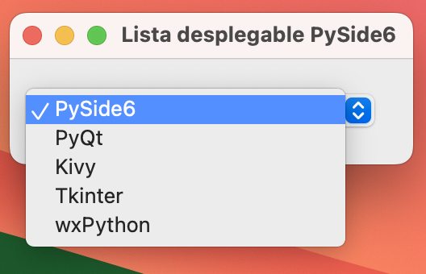
Al hacer clic sobre esta lista desplegable, los usuarios pueden seleccionar una de las opciones desplegadas. Las listas desplegables también pueden ser de solo lectura o editables y además de texto, también pueden contener pixmaps o ambos.
Botones radiales
El último widget que estudiarás es el botón radial, que puedes crear con la clase QRadioButton. Se trata de un botón circular de opción que puedes seleccionar al hacer clic sobre él. Los botones radiales son útiles cuando necesitas que el usuario seleccione una entre varias opciones.
Todas las opciones en un grupo de botones radiales son visibles al mismo tiempo, pero el usuario solo puede seleccionar una de ellas. Es decir, la selección es excluyente. Considera el siguiente ejemplo:
from PySide6.QtWidgets import (
QApplication,
QLabel,
QRadioButton,
QVBoxLayout,
QWidget,
)
app = QApplication([])
window = QWidget()
window.setWindowTitle("Botones radiales PySide6")
window.setGeometry(100, 100, 230, 80)
layout = QVBoxLayout()
window.setLayout(layout)
layout.addWidget(QLabel("¿Qué prefieres?"))
foods = ["Pizza", "Hamburguesa", "Pasta", "Pollo asado"]
for food in foods:
radio = QRadioButton(food)
layout.addWidget(radio)
window.show()
app.exec()
En este ejemplo, creas una aplicación que muestra un texto descriptivo, "¿Qué prefieres?", seguido de una serie de botones radiales, que representan opciones entre las que el usuario puede elegir. En este caso, las opciones son "Pizza", "Hamburguesa", "Pasta" y "Pollo asado". Para crear los botones, empleas un ciclo for que itera sobre la lista de comidas.
Al hacer clic en uno de los botones, este se activa y los demás se desactivan automáticamente. Esto los hace ideales para preguntas de selección única, como preferencias o respuestas a encuestas:
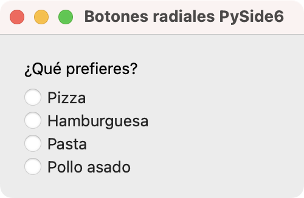
En este grupo de botones radiales, solo un botón puede estar seleccionado a la vez. Si seleccionas otro botón del grupo, entonces el botón previamente seleccionado se deseleccionará automáticamente.
PySide6 tiene una amplia colección de widgets. Actualmente hay más de cuarenta widgets disponibles. Aquí, has estudiado solo una pequeña muestra. Sin embargo, esta es suficiente para mostrarte el poder y la flexibilidad de este framework GUI.
En la siguiente sección, aprenderás cómo organizar diferentes widgets para construir GUIs modernas y completamente funcionales para tus aplicaciones.
Usando gestores de disposición
Para construir GUI app, necesitas saber cómo organizar un conjunto de widgets para que tu GUI sea intuitiva y funcional. En PySide6, las herramientas para este fin son los llamados gestores de disposición.
Se trata de clases que te permiten dimensionar y posicionar tus widgets en la ventana o formulario de la aplicación. Se adaptan automáticamente a eventos de cambio de tamaño y otros cambios en la GUI, controlando el tamaño y posición de todos sus widgets.
PySide6 proporciona cuatro clases básicas de gestores de disposición:
En las secciones siguientes, aprenderás lo básico de cómo emplear estas clases y crear GUIs ordenadas y funcionales.
Disposición horizontal
La primera clase de gestor de disposición que estudiarás es QHBoxLayout. Esta te permite organizar los widgets horizontalmente de izquierda a derecha. El ejemplo a continuación muestra cómo usar QHBoxLayout para organizar tres botones horizontalmente:
from PySide6.QtWidgets import (
QApplication,
QHBoxLayout,
QPushButton,
QWidget,
)
app = QApplication([])
window = QWidget()
window.setWindowTitle("Disposición Horizontal")
layout = QHBoxLayout()
window.setLayout(layout)
positions = ["Izquierda", "Centro", "Derecha"]
for position in positions:
button = QPushButton(position)
layout.addWidget(button)
window.show()
app.exec()
En este ejemplo, creas una instancia de QHBoxLayout llamada layout. Luego agregas los tres botones en un ciclo usando el método .addWidget(). La aplicación resultante luce como se muestra a continuación:
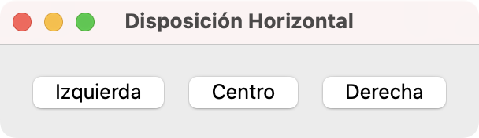
La figura anterior muestra tres botones en disposición horizontal. Los botones se muestran de izquierda a derecha en el mismo orden en que los agregaste en tu código.
Disposición vertical
La siguiente clase de gestor de disposición es QVBoxLayout. Esta clase te permite organizar los widgets verticalmente de arriba a abajo, facilitando la construcción de diseños verticales en tu GUI.
A continuación, un ejemplo de cómo puedes usar QVBoxLayout para organizar tres botones verticalmente:
from PySide6.QtWidgets import (
QApplication,
QPushButton,
QVBoxLayout,
QWidget,
)
app = QApplication([])
window = QWidget()
window.setWindowTitle("Disposición Vertical")
window.setGeometry(100, 100, 230, 80)
layout = QVBoxLayout()
window.setLayout(layout)
positions = ["Arriba", "Centro", "Abajo"]
for position in positions:
button = QPushButton(position)
layout.addWidget(button)
window.show()
app.exec()
En este ejemplo, creas una instancia de QVBoxLayout llamada layout. En el ciclo for, añades tres botones a layout empleando .addWidget(). Cuando ejecutas esta aplicación de ejemplo, obtienes una ventana que se ve como la siguiente:
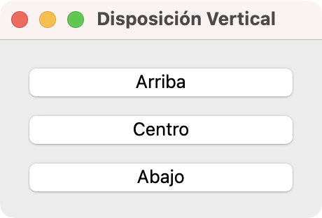
Esta captura muestra tres botones en un arreglo vertical, uno debajo del otro. Los botones aparecen en el mismo orden en que los agregaste a tu código, de arriba a abajo.
Disposición en cuadrícula
El tercer gestor de disposición que estudiarás es QGridLayout. Esta clase te permite organizar los widgets en una cuadrícula de filas y columnas. Cada widget tendrá una posición relativa en la cuadrícula. Puedes definir la posición de un widget con un par de coordenadas como (fila, columna). Cada coordenada debe ser un número entero. Estos pares de coordenadas definen qué celda en la cuadrícula ocupará un widget determinado.
QGridLayout toma el espacio disponible, lo divide en filas y columnas, y coloca cada widget hijo en su propia celda.
A continuación, se muestra un ejemplo de cómo organizar una GUI con este gestor de disposición:
from PySide6.QtWidgets import (
QApplication,
QGridLayout,
QPushButton,
QWidget,
)
app = QApplication([])
window = QWidget()
window.setWindowTitle("Disposición en Cuadrícula")
layout = QGridLayout()
window.setLayout(layout)
button_names = [
"Botón (0, 0)",
"Botón (0, 1)",
"Botón (0, 2)",
"Botón (1, 0)",
"Botón (1, 1)",
"Botón (1, 2)",
"Botón (2, 0)",
]
for i, name in enumerate(button_names):
button = QPushButton(name)
layout.addWidget(button, i // 3, i % 3)
layout.addWidget(
QPushButton("Botón (2, 1) + 2 Columnas de Amplitud"),
2,
1,
1,
2,
)
window.show()
app.exec()
En este ejemplo, creas una aplicación que utiliza un objeto QGridLayout para organizar sus widgets en la pantalla. Nuevamente, para añadir los botones, empleas un ciclo for y el método .addWidget(). Nota que el segundo y tercer argumento que pasas al métodos son números enteros que definen la posición de cada widget en la cuadrícula.
Finalmente, pasas dos argumentos más a .addWidget(). Estos argumentos son rowSpan y columnSpan los cuales sirven para hacer que un widget ocupe más de una fila o columna. En este ejemplo, el último botón ocupa una fila y dos columnas.
Si ejecutas este código desde tu línea de comandos, obtendrás una ventana que luce así:
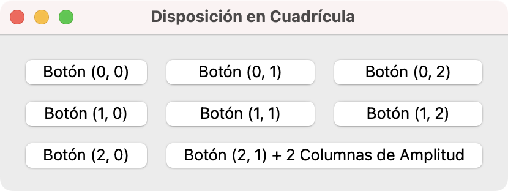
En esta figura, puedes ver tus botones organizados en una cuadrícula de filas y columnas. El último botón ocupa dos columnas en la cuadrícula.
Disposición de formulario
El último gestor de disposición que estudiarás es el QFormLayout. Con esta clase, puedes organizar los widgets en un diseño de dos columnas. La primera columna generalmente muestra texto en etiquetas, mientras que la segunda columna pueden contener widgets de entrada de datos como QLineEdit, QComboBox, QSpinBox, entre otros.
El siguiente ejemplo muestra cómo crear una aplicación que utiliza un objeto QFormLayout para organizar sus widgets:
from PySide6.QtWidgets import (
QApplication,
QFormLayout,
QLineEdit,
QWidget,
)
app = QApplication([])
window = QWidget()
window.setWindowTitle("Disposición de Formulario")
window.setGeometry(100, 100, 280, 80)
layout = QFormLayout()
window.setLayout(layout)
labels = ["Nombre:", "Edad:", "Ocupación:", "Dirección:"]
for label in labels:
layout.addRow(label, QLineEdit())
window.show()
app.exec()
QFormLayout tiene un método llamado .addRow() que puedes usar para agregar una fila de dos widgets al formulario. El primer argumento de .addRow() debe ser una etiqueta o una cadena. El segundo argumento puede ser cualquier widget que permita al usuario ingresar o editar datos. En este ejemplo específico, has usado campos de entrada de texto, QLineEdit.
Si ejecutas este código, obtendrás una ventana similar a la siguiente:
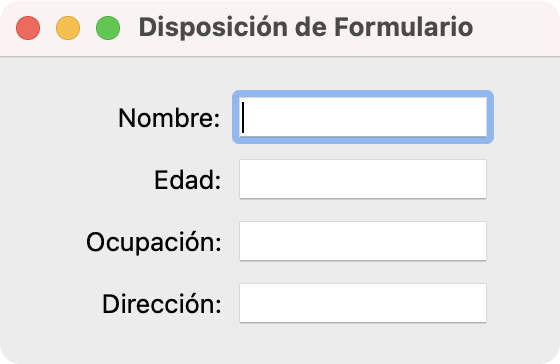
Esta ventana muestra un diseño de formulario. La primera columna contiene etiquetas para comunicar al usuario la información deseada. La segunda columna muestra widgets que permiten al usuario ingresar la información.
Creando ventanas y diálogos
Las aplicaciones de escritorio GUI en PySide6 generalmente están conformadas por dos tipos de ventanas:
- Ventana principal: La ventana en la que se desarrolla la mayor parte de la interacción del usuario.
- Diálogos: Ventanas auxiliares de la aplicación que solicitan o muestran información al usuario.
En las secciones siguientes, aprenderás sobre ambos tipos de ventanas y cómo crearlas en PySide6 de manera que puedas construir aplicaciones funcionales y atractivas.
Ventanas principales
La mayoría de las veces, tus aplicaciones tendrán una ventana que incluye barra de menú, algunas barras de herramientas, una barra de estado y un widget central que será el elemento principal de la GUI. Para crear este tipo de ventana en PySide6, puedes heredar de la clase QMainWindow.
Una instancia de una clase que deriva de QMainWindow se considera la ventana principal de la aplicación y debe ser única.
La clase QMainWindow proporciona un marco para construir la GUI de tu aplicación rápidamente. Esta clase tiene su propio diseño incorporado, que acepta los siguientes componentes gráficos:
| Componente | Posición | Descripción |
|---|---|---|
| Una barra de menú | Arriba | Contiene el menú principal de la aplicación |
| Una o más barras de herramientas | Cualquiera de los lados | Puede contener botones de herramienta y otros widgets, como QComboBox, QSpinBox, y más |
| Un widget central | Centro | Contiene el widget central de la ventana, que puede ser de cualquier tipo, incluyendo un widget compuesto |
| Uno o más widgets acoplables | Alrededor del widget central | Son ventanas pequeñas, movibles y ocultables |
| Una barra de estado | Abajo | Contiene la barra de estado de la app, que muestra información de estado |
No puedes crear una ventana principal sin un widget central. Puedes establecer el widget central de la ventana con el método .setCentralWidget(). El diseño de la ventana principal te permitirá tener un único widget central, que puede ser simple o compuesto.
El siguiente ejemplo muestra cómo usar QMainWindow para crear una aplicación con ventana principal:
from PySide6.QtWidgets import (
QApplication,
QLabel,
QMainWindow,
QStatusBar,
QToolBar,
)
class Window(QMainWindow):
def __init__(self):
super().__init__(parent=None)
self.setWindowTitle("QMainWindow")
self.setCentralWidget(QLabel("Soy el Widget Central"))
self._createMenu()
self._createToolBar()
self._createStatusBar()
def _createMenu(self):
menu = self.menuBar().addMenu("&Menú")
menu.addAction("&Salir", self.close)
def _createToolBar(self):
tools = QToolBar()
tools.addAction("Salir", self.close)
self.addToolBar(tools)
def _createStatusBar(self):
status = QStatusBar()
status.showMessage("Soy la Barra de Estado")
self.setStatusBar(status)
if __name__ == "__main__":
app = QApplication([])
window = Window()
window.show()
app.exec()
Primeramente, creas una clase llamada Window que hereda de QMainWindow. Dentro del método .__init__(), llamas al inicializador de la clase base. El argumento parent se establece en None porque esta es la ventana principal de tu aplicación, por lo que no debe tener una ventana padre.
Luego, estableces el título de la ventana y creas un objeto QLabel para usar como widget central de la ventana. Finalmente, llamas los métodos no públicos ._createMenu(), ._createToolBar(), ._createStatusBar() para crear el menú principal, una barra de herramientas y la barra de estado.
El widget central y la barra de estado muestran mensajes identificativos. El menú y la barra de herramientas mostrarán una opcion para salir de la aplicación.
En macOS, cuando ejecutas la aplicación de ejemplo anterior, obtendrás una ventana como la siguiente:
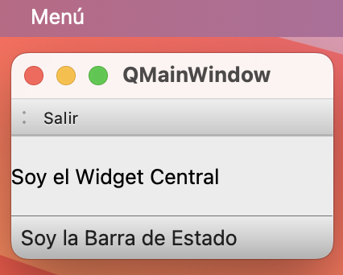
Como puedes confirmar, tu aplicación tiene los siguientes componentes:
- Un menú principal llamado genéricamente Menú que se muestra en la barra superior del escritorio macOS. En otras plataformas, el menú principal aparece en la misma ventana de la aplicación justo debajo de la barra de título.
- Una barra de herramientas que contiene un botón Salir.
- Un widget central compuesto por un objeto
QLabelque muestra un mensaje identificativo. - Una barra de estado en la parte inferior de la ventana que también muestra un mensaje identificativo.
¡Eso es todo! Has aprendido a construir una aplicación con ventana principal usando Python y PySide6. Lo siguiente es aprender un poco sobre cómo crear diálogos.
Diálogos y formularios
También es común que tus aplicaciones tengan varios diálogos para llevar a cabo acciones secundarias que dependen de la entrada del usuario. Para crear un diálogo, necesitas crear una clase que herede de QDialog, que es la clase base de todas las ventanas de diálogo en PySide6.
En PySide6, los diálogos pueden ser:
- Modal: Bloquea la entrada a cualquier otra ventana visible en la misma aplicación. Puedes mostrar un diálogo modal llamando a su método
.exec(). - No modal: Opera independientemente de otras ventanas en la misma aplicación. Puedes mostrar un diálogo no modal usando su método
.show().
Puedes emplear diálogos como formularios de entrada de datos, ventanas de configuración, entre otras. Por esto, los diálogos también pueden proporcionar un valor de retorno y tener botones predeterminados, como Aplicar, Ok y Cancelar.
Un diálogo es siempre una ventana independiente. Si un diálogo tiene un widget padre (parent), entonces se mostrará centrado sobre dicho widget.
A continuación un ejemplo de cómo emplear QDialog para desarrollar una diálogo:
from PySide6.QtWidgets import (
QApplication,
QDialog,
QDialogButtonBox,
QFormLayout,
QLineEdit,
QVBoxLayout,
)
class Window(QDialog):
def __init__(self):
super().__init__(parent=None)
self.setWindowTitle("QDialog")
layout = QVBoxLayout()
self.setLayout(layout)
form_layout = QFormLayout()
labels = ["Nombre:", "Edad:", "Ocupación:", "Dirección:"]
for label in labels:
form_layout.addRow(label, QLineEdit())
layout.addLayout(form_layout)
buttons = QDialogButtonBox()
buttons.setStandardButtons(
QDialogButtonBox.StandardButton.Cancel |
QDialogButtonBox.StandardButton.Ok
)
layout.addWidget(buttons)
app = QApplication([])
window = Window()
window.show()
app.exec()
En este ejemplo, usas la clase QDialog como la base para crear una ventana de diálogo. Para definir el diseño del diálogo, usas un QVBoxLayout y un QFormLayout. Con ellos, estableces el diseño principal que consiste en un formulario para entrada de datos y dos botones para aceptar o cancelar la entrada de datos.
Empleas la clase QDialogButtonBox para gestionar los botones estándar del diálogo OK y Cancel. Este widget es muy útil porque gestiona automáticamente las interacciones comunes de los botones como cerrar el cuadro de diálogo o confirmar acciones.
El código anterior mostrará una ventana que se verá así:
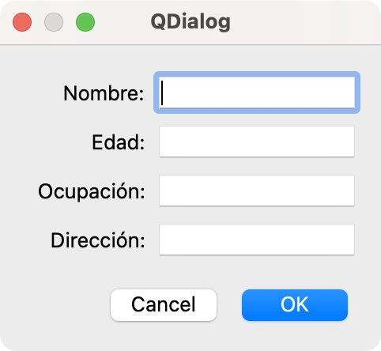
Esta figura muestra el diálogo creado con un QFormLayout para organizar los widgets y un QVBoxLayout para el diseño global.
Mensajes y diálogos estándar
PySide6 también proporciona una forma rápida de crear cuadros de mensaje para el usuario. La clase QMessageBox te permite crear pequeñas ventanas diseñados para mostrar mensajes al usuario. PySide6 ofrece varios tipos de cuadros de mensajes predefinidos:
-
QMessageBox.information(): Permite mostrar un mensaje informativo, como una confirmación o un aviso simple. -
QMessageBox.warning(): Permite mostrar una advertencia sobre posibles problemas. -
QMessageBox.critical(): Muestra mensajes de error críticos. -
QMessageBox.question(): Presenta una pregunta al usuario con opciones como Sí y No.
Además, PySide6 tiene diálogos estándar predefinidos que facilitan la interacción con el usuario, ya sea para permitirle seleccionar archivos, carpetas, colores o fuentes. Aquí tienes un resumen de ellos:
-
QFileDialog: Permite al usuario seleccionar un archivo existente para abrirlo. Con el método.getOpenFileName(), seleccionas un archivos. Con.getSaveFileNames(), seleccionas múltiples archivos. Por su parte,.getSaveFileName()te permite seleccionar la ubicación y el nombre para guardar un archivo. Finalmente,.getExistingDirectory()permite seleccionar una carpeta en lugar de un archivo. -
QColorDialog: Presenta un diálogo selector de colores que permite al usuario elegir un color. El método empleado es.getColor(). -
QFontDialog: Representa un selector de fuentes que permite al usuario seleccionar una fuente, tamaño y estilo. El método empleado es.getFont(). -
QInputDialog: Permite al usuario ingresar datos simples, como un texto, un número o una opción de una lista. Los métodos correspondientes son.getText()para entrada de texto,.getInt()para entrada de un número entero, y.getItem()para selección de un elemento de una lista.
A continuación, un ejemplo que muestra algunos de elementos en acción:
from PySide6.QtWidgets import (
QApplication,
QColorDialog,
QFileDialog,
QFontDialog,
QInputDialog,
QMessageBox,
)
app = QApplication([])
# Mostrar un mensaje
QMessageBox.information(
None,
"Información",
"Este es un mensaje.",
)
# Abrir un archivo
file_path, _ = QFileDialog.getOpenFileName(None, "Abrir Archivo")
if file_path:
QMessageBox.information(
None,
"Archivo Seleccionado",
f"Seleccionaste: {file_path}",
)
# Seleccionar un color
color = QColorDialog.getColor()
if color.isValid():
QMessageBox.information(
None, "Color Seleccionado", f"Seleccionaste: {color.name()}"
)
# Seleccionar una fuente
ok, font = QFontDialog.getFont()
if ok:
QMessageBox.information(
None, "Fuente Seleccionada", f"Seleccionaste: {font.family()}"
)
# Entrada de texto
text, ok = QInputDialog.getText(None, "Entrada de Texto", "Escribe algo:")
if ok and text:
QMessageBox.information(None, "Texto Ingresado", f"Escribiste: {text}")
app.exec()
En esta aplicación, lo primero que haces es mostrar un mensaje empleando QMessageBox.information(). Luego, empleas QFileDialog.getOpenFileName() para generar un diálogo que te permite abrir un archivo seleccionado. Seguidamente, creas diálogos para seleccionar un color y una fuente. Finalmente, creas un diálogo que le da al usuario la posibilidad de introducir un número entero de manera rápida.
Los cuadros de mensaje y los diálogos estándar son herramientas esenciales para cualquier aplicación PySide6 que requiera interacción con el usuario.
Conclusión
Las aplicaciones con interfaz gráfica de usuario (GUI) representan una parte sustancial en el desarrollo de software. Python ofrece varios frameworks y bibliotecas que pueden ayudarte a desarrollar aplicaciones GUI modernas y robustas.
En este tutorial, aprendiste cómo usar PySide6, que es una de las bibliotecas más populares y sólidas para el desarrollo de aplicaciones GUI en Python. Es además, el enlace oficial de Python con Qt.
En este tutorial, has aprendido a:
- Instalar PySide6 y configurarlo en tu computadora
- Desarrollar aplicaciones con GUI basadas en PySide6
- Organizar una GUI usando gestores de disposición
- Crear ventanas principales y diálogos en tus aplicaciones PySide6
Ahora puedes usar tus conocimientos de Python y PySide6 para dar vida a tus propias aplicaciones GUI de escritorio.